金正男遇刺已经超过半个月了，今天来发一篇汇总。相比国内的热点事件，此事会有更深远的影响——不光影响到朝鲜半岛，甚至可能影响到全球政治格局。
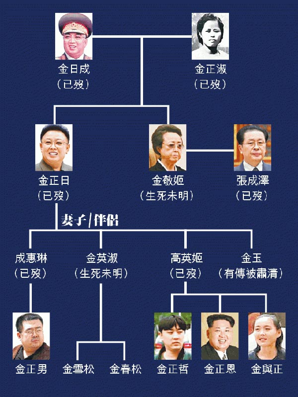
金氏王朝家族关系图
作为金正日的长子，金正男一度是金氏王朝接班人。关于他的身世及个性，参见下面这篇：
《私生子、皇太子、流亡客⋯⋯誰是金正男？ @ 端傳媒》
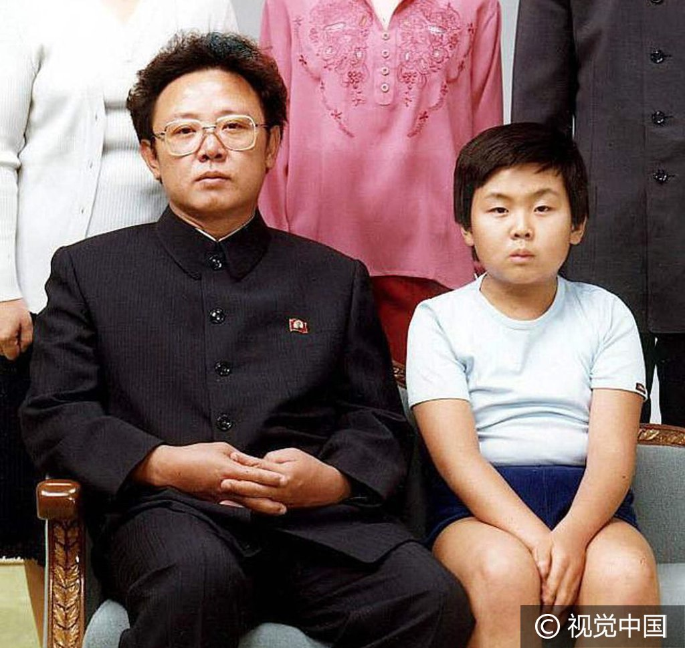
金正日与长子金正男（摄于1981年）
后来由于种种原因，他的接班人地位被金正恩抢走。很多人认为2001年的迪斯尼事件直接导致了金正男失去王位。但是也有可能他在那之前已经失宠，迪斯尼事件只是压跨骆驼的最后一根稻草。由于金氏家族的不透明性，金正男失宠的原因外界可能永远无法知晓。
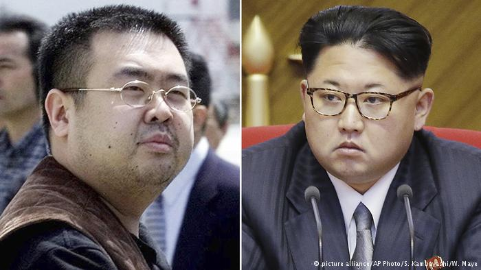
金正男、金正恩
2月13日上午，金正男去吉隆坡机场准备搭乘飞机回家（澳门）。他挎着一个包进入2号航站楼的出发大厅、查看航班的出发信息显示屏，并走向亚洲航空（AirAsia）的值机柜台。
途中遇一不认识的女子搭话，另一女子趁其不备从后方掐住金正男的脖子，然后金正男脸上被喷了不明液体。之后两女子快速离开，整个过程大约3~5秒。
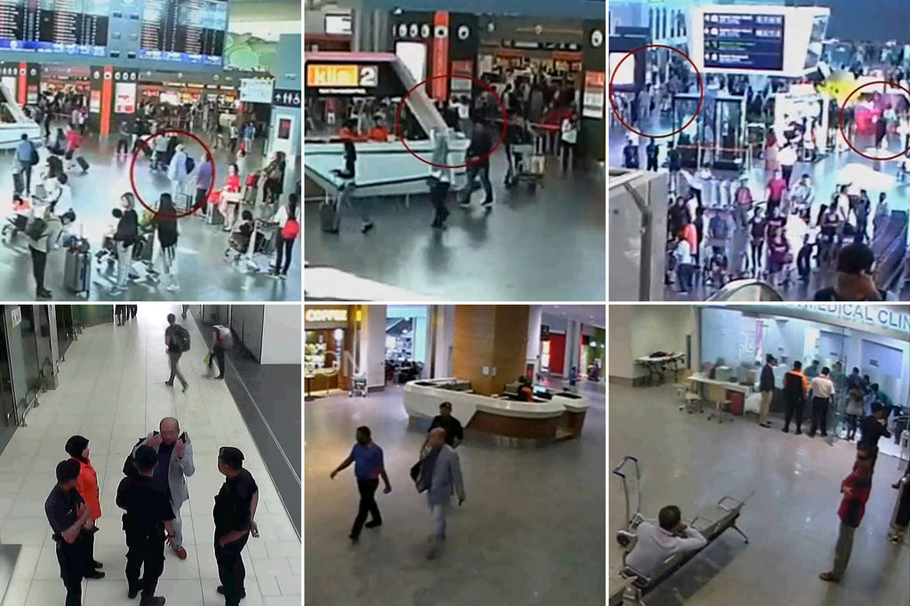
遇刺过程的视频
遇袭后，金正男走向机场工作人员和保安求助，并不停地朝自己的脸挥手。工作人员陪同他一起走向楼下的机场诊所。
金正男在机场诊所中昏迷，昏迷前用英文说：
机场医务室
机场医务室中，昏迷中的金正男
几分钟后，金正男上了救护车，但已回天无力。警方称金正男在抵达医院前已经死亡。
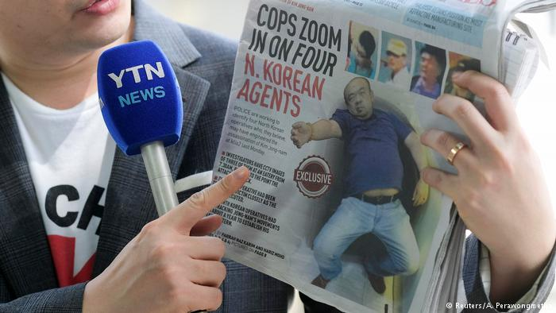
马来西亚当地报纸关于金正男遇刺身亡的报道
先来梳理下几个嫌犯的来龙去脉。
马来西亚警方根据机场录像，首先抓获两名直接袭击金正男的女子，身份是：
段氏香（Doan Thi Huong），28岁，越南籍
西蒂·艾莎（Siti Aisyah），25岁，印尼籍
两女被逮捕后，马来西亚警方公布的照片
案发后，马来西亚方面给出的视频（链接在“这里”）显示：身穿（标有 LOL 字样）Ｔ 恤的女子正在逃离机场。此人就是“段氏香（Doan Thi Huong）”。
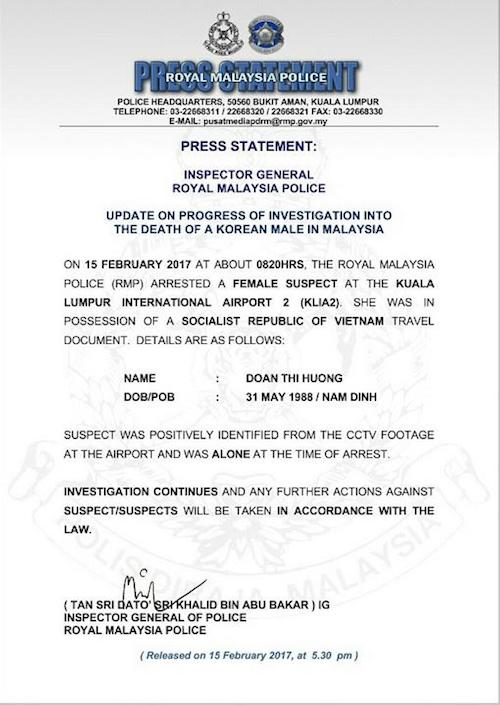
马来西亚警方发的声明（逮捕越南籍女嫌犯）
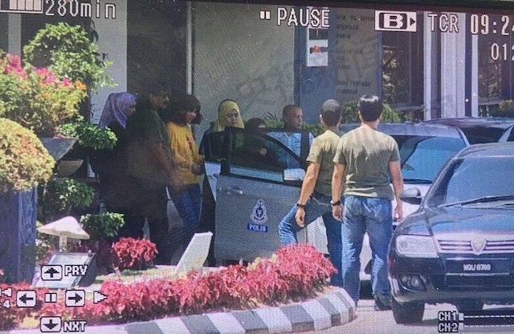
逮捕女嫌疑犯的现场照片
机场录像中，穿着 LOL 标记 Ｔ 恤的段氏香
这2名女嫌犯告诉警方：
有4名男子安排他们玩一个恶作剧，需要她们一人使用喷剂朝金正男脸部喷射，另一人则以手帕捂住金正男脸部。
事成之后有现金奖励。印尼女嫌犯说拿了400马来西亚林吉特（折合约90美元）
（以下是天朝网友调侃）
@刘芮东：
金正男死于越南和印尼杀手，反映当今全球化背景下服务外包向东南亚倾斜的大趋势。
这些特工太过分，层层转包，最后只花100块费用。
这也反应国内国际工程转包分包的基本现状。
22日，马警方召开第2次新闻发布会，警方称：
经过好事者（可能是娱记）的不懈努力，涌现了关于段氏香的很多报道。
《金正男 LOL 女刺客旗袍美照曝光 @ 自由時報》
段氏香身着旗袍的香艳照片
段氏香参加选秀节目《越南偶像》的照片
她的 Facebook 帐号也被挖出来了。为了避免继续跑题，俺就不把每张艳照都贴出来了，感兴趣的同学自己去看《刺殺金正男「LOL潮妹」 臉書辣照曝光 @ 蘋果日報》
根据马来西亚警方及相关媒体的报道，有4名来自北朝鲜的男子参与暗杀行动，资料如下：
其中3人出现在机场录像的截屏
根据机场的闭路电视，这几人在7点30分（刺杀行动之前一个半小时）就提前进入机场边上的 Bibik Heritage 餐厅，坐在那里一直等。
该餐厅距离袭击金正男的地点，大约50米。这几人在餐厅中观看了刺杀过程。还有一人走出餐厅，站在更近的距离观看刺杀。

Bibik Heritage 餐厅
这4人在暗杀成功后立即通过事先订好的机票离开马来西亚，【辗转】返回平壤。
他们回平壤选择的路线，绕了大半个地球，具体是：
马来西亚警方已经发现这4人在吉隆坡的窝点，并在房间中搜出【注射化学物质的器具】。这成为朝鲜政权策划暗杀的又一个证据。
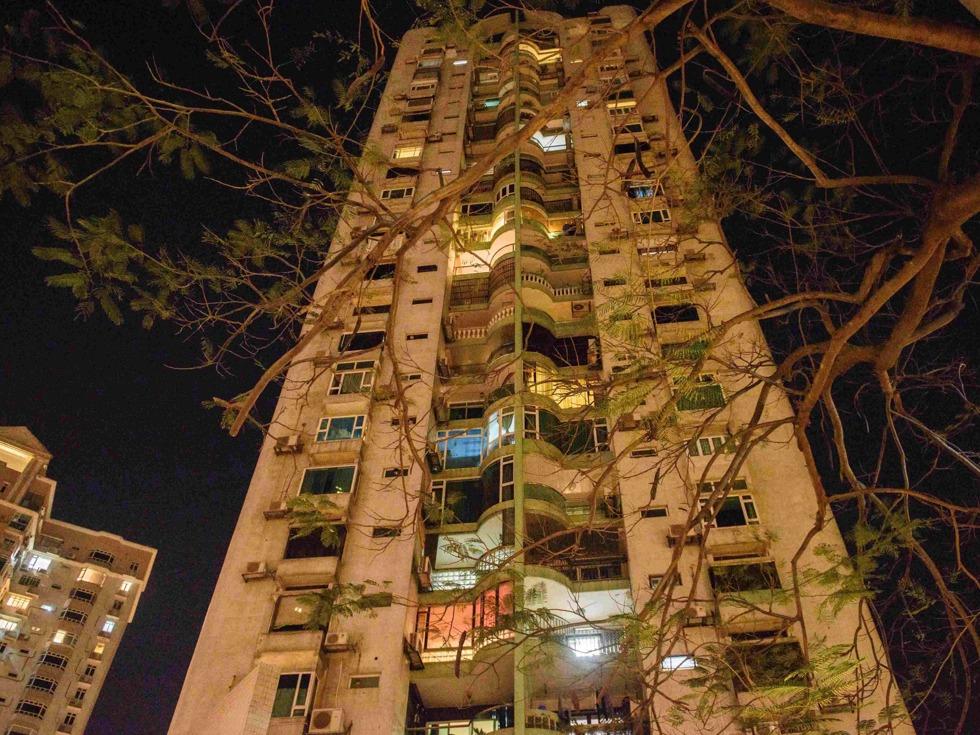
暗杀4人组在吉隆坡住过的公寓楼
17日晚间，马来西亚雪邦警察局在雪兰莪州某公寓逮捕了第4个嫌犯（也是首位朝鲜籍嫌犯）。根据其身份证，姓名为李钟哲（Ri Jong Chol），1970年5月6日生于朝鲜。
此人毕业于金日成综合大学，曾获得科学及医药文凭；曾到印度加尔各答某医药研究学院工作；之后返回朝鲜。
大约一年前，李钟哲通过“外籍人士工作证”，获马来西亚某公司聘用（该公司获香港某集团授权代理抗癌系列药品）。
根据机场录像：行刺的时候，李钟哲也出现在 Bibik Heritage 餐厅，并与刺杀小组的几人同桌。
李钟哲被捕的现场照片
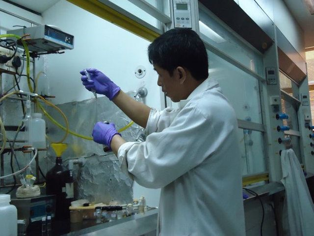
李钟哲的工作照（来自其本人的 Facebook）
此人名叫玄光成（Hyon Kwang Song），马来西亚警方认为此人与暗杀4人组有密切接触，要求约谈此人。但是这个玄光成躲在大使馆一直不出来。
马来西亚方面威胁说：如果北韩外交人员不主动配合调查，马国警方将向法院声请拘票，进行强制拘提。
玄光成
暗杀之后，马国方面的尸体解剖报告和毒理化验结果，迟迟没有公布。全球各地的吃瓜群众，被吊足了胃口。
周五（2月24日），马国警方的鉴定结果终于公布了——送金正男上西天的是【VX 神经毒剂】。马警方的通告中提及：在金正男脸部和眼睛发现了 VX GAS。以下是外媒的报道：
《金正男遇刺案——在面部发现 VX 神经毒剂 @ BBC》
《马来警方：金正男是被VX毒剂毒死的 @ 美国之音》
（以下是天朝网友调侃）
ICE啤酒：
朝鲜居然把顶级化学武器物质搞到了马来西亚，这下马来人要毛掉了。
那么，这个 VX 是啥玩意儿捏？下面普及一下化学武器常识：
马来西亚方面称：印尼女子西蒂·艾莎（Siti Aisyah）袭击之后，在乘出租车离开机场的路上出现呕吐症状。
看到这里，很多同学估计：这是神经毒剂轻度中毒的症状。
但是，美国的生化专家（Raymond A. Zilinskas）认为：即使两人全都带着塑料手套，在涂抹 VX 毒剂的过程中，这两人也会中毒身亡。
那么，为啥这两人没死捏？
上述专家认为：两人分别涂抹了不同的化学物质，然后两种物质在金正男面部形成 VX 成分。
（具体参见《女疑犯手持毒素 抹臉合成變 VX @ 東網》）
关于这个问题，BBC 发了一篇深入的分析《朝鲜谁能发动对金正男的 VX 谋杀？ @ BBC》
此文介绍了朝鲜几个最神秘的机构——它们隐藏在重重帷幕之下，外界了解很少。
朝鲜当局派数名代表向马来西亚索要在吉隆坡机场疑遭毒杀的金正男的尸体，马来西亚表示要按程序进行，不会屈服于压力。
马国警方称：随着越南籍女嫌犯落网，警方根据各项证据将把此案从原来的“猝死案”改为“谋杀案”进行调查。
尸体解剖在吉隆坡中央医院的停尸间进行。北朝鲜使馆派人前往观看。
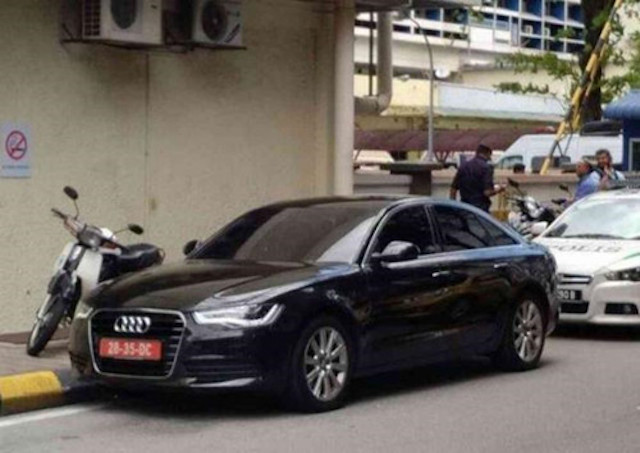
朝鲜使馆的车辆停在吉隆坡中央医院
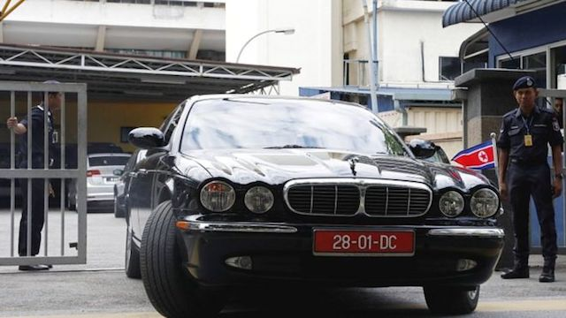
尸检完成后，挂朝鲜国旗的汽车驶出医院
（以下是天朝网友调侃）
@夹了笔的海盗：
你以为打猎呐，谁杀的归谁？
马来西亚强调，在家属未提供DNA样本之前，不会移交遗体。
据发生刺杀事件的机场所在雪兰莪州警长周五向法新社表示：
朝鲜驻马来西亚大使姜哲17日发表谈话，拒绝承认马来西亚方面对（金正男）尸体所做的任何尸检结果。
姜哲在停放金正男尸体的吉隆坡中央医院外对记者们说：
朝鲜驻马来西亚大使姜哲在发表声明
前面介绍的那位药物专家李钟哲被马来西亚逮捕后，因为此人是朝鲜籍，朝鲜使馆方面要求与此人面谈
朝鲜方面的理由是：为了解该嫌疑人具体嫌疑和调查动向，以对本国民领事接见权为由要求与嫌疑人面谈。
马来西亚方面不同意。
朝鲜使馆人员在抵达警局10分钟前，嫌疑人已在警车的护送下押往戒备森严的雪兰莪州警察局。朝鲜使馆人员扑了个空。
药物专家李钟哲被押走的照片
朝鲜驻马来西亚大使姜哲20日下午召开记者会，措辞强硬地回应马来西亚，表示朝鲜不信任马来西亚警方的调查。姜哲称：
（以下是天朝网友调侃）
@艾尔是三盲：
当初斯大林对克鲁普斯卡娅说：“再胡乱说话就宣布你不是列宁夫人！”
由于金正男遇刺案引发的外交紧张局势持续升温，马国外交部20日发表文告，证实已经传召马国驻朝鲜大使回国。
23日，马来西亚旅游及文化部长拿督斯里纳兹里在公开场合表示，朝鲜是“流氓国家（rogue country）”。马朝关系随金正男遇刺而闹僵之际，大马国民暂时不适宜到朝鲜旅行。
朝中社23日刊发“朝鲜法律专家委员会发言人谈话”。谈话称，马来西亚的外交部和医院在案发不久认定“心脏休克致死”，朝使馆据此要求交出尸体，但韩国右翼媒体散布“毒杀”说法后，大马秘密警察立刻介入调查并要求尸检，让事态变得复杂起来。尽管朝驻马使馆以死者持外交护照享治外法权为由、以《维也纳外交关系公约》为据明确表态称，“万万不能尸检”，马方却执意尸检，赤裸裸地侵犯朝鲜自主权，粗暴践踏人权，这是不道德、反人伦、不道德的行径。
谈话批评称，马方的种种不当做法与韩国的不轨图谋相伴而生遥相呼应。韩国右翼媒体散布朝鲜幕后指使暗杀的流言蜚语，韩国政府高调反应说明早有预谋，是备好剧本借题发挥。
谈话还称，朝鲜公民死于马境内，马政府负有最大责任，却反过来找茬，这简直是厚颜无耻之举。
朝方还指责马方企图将本案政治化别有用心，拘留其无辜公民是未查实先定罪。
在2月20日宣布召回驻朝大使之后，马来西亚副总理扎希德（Ahmad Zahid Hamidi）在24日透露，已指示外交部重新评价与朝鲜的外交关系并向内阁汇报。
24日，身兼内政部长的副总理阿末札希（Ahmad Zahid Hamidi）抨击北韩，称无法接受对方不断发表不尊重马国主权言论：
阿末扎希还指示外交部提交评估与北韩外交关系的研究报告予内阁，再由内阁讨论及定夺，是否继续维持两国邦交。
自从查出金正男死于 VX 神经毒剂，马国内舆论对朝鲜的批评趋于强烈。当地的《新海峡时报》披露，国民中已出现“应该同朝鲜断交”的呼声。
中国商务部、海关总署2月18日公告：
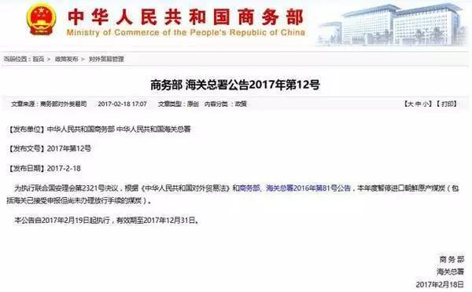
天朝商务部及海关总署的公告
编程随想注：
北朝鲜 95% 的煤出口到中国。这些煤占到了朝鲜对华出口总值的 46% 左右。出口煤炭给咱们天朝，是北朝鲜主要的创汇渠道。
关于这点的详细分析，参见本文末尾的那篇《叫停进口朝鲜煤，这是多大的事你知道吗？》
《华盛顿邮报》评论：
23日，朝鲜中央通讯社发表评论《卑鄙的做法、低级的算法》，对中国发出不点名批评。社论的语气非常严厉，为近几年所罕见。
（编程随想注：以下是社论全文，粗体是俺标注滴）
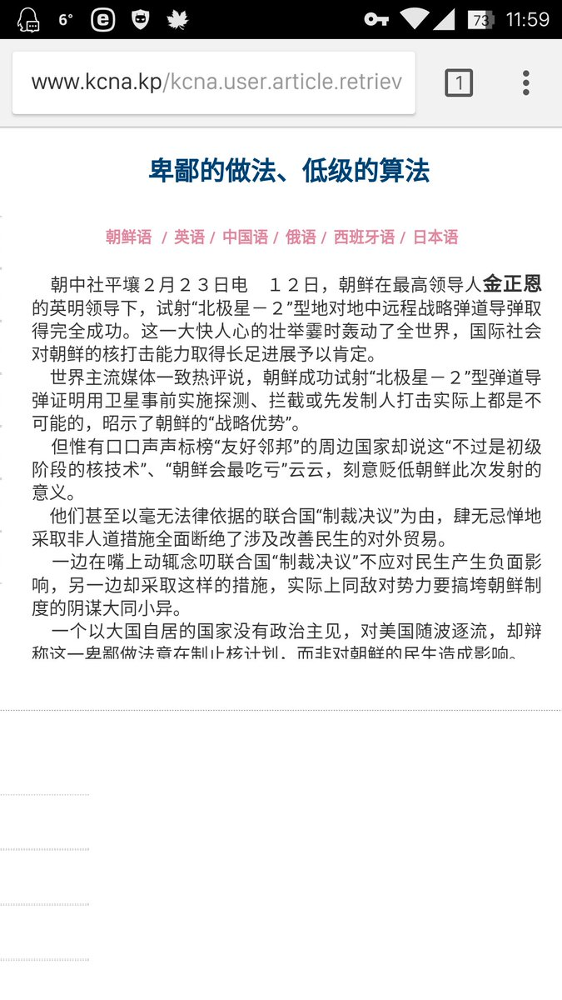
作为回应，朝廷喉舌《环球时报》发表文章：《坚决执行安理会决议，莫睬朝中社评论》，文中称：
《孙兴杰：金正男之死的萨拉热窝镜像 @ 金融时报》
（编程随想注：以下是此文节选，粗体是俺标注滴）
《赵楚：刺杀金正男——朝鲜问题已到最后关头 》
（编程随想注：原发于搜狐，已经被和谐，俺给出的是墙外的镜像。下面是此文节选，粗体是俺标注滴）
《唐驳虎：叫停进口朝鲜煤，这是多大的事你知道吗？ @ 凤凰网》
（编程随想注：以下是此文节选，粗体是俺标注滴）
《韩日专家：金正男之死显示金正恩政权不稳 @ 德国之声》
（编程随想注：以下是此文节选）
《金正男暗殺事件的蝴蝶效應 @ 聯合新聞網》
（编程随想注：以下是此文节选）
《金正男被刺 中国被打脸 @ RFA》
（编程随想注：以下是此文节选）
俺博客上，和本文相关的帖子（需翻墙）：
聊聊朝鲜半岛核问题——北朝鲜博弈策略分析
北朝鲜金氏王朝的崛起——聊聊金日成的历次大清洗
最“纯正”的共产主义政权——红色高棉简史
谈谈真理部对朝鲜战争的忽悠
每周转载：网友热议北朝鲜张成泽倒台
每周转载：关于朝鲜核试验（网文7篇，评论若干）
每周转载：关于北朝鲜（网文5篇）
普天同庆金二胖归西
★金正男的背景介绍
金氏王朝家族关系图
作为金正日的长子，金正男一度是金氏王朝接班人。关于他的身世及个性，参见下面这篇：
《私生子、皇太子、流亡客⋯⋯誰是金正男？ @ 端傳媒》
金正日与长子金正男（摄于1981年）
后来由于种种原因，他的接班人地位被金正恩抢走。很多人认为2001年的迪斯尼事件直接导致了金正男失去王位。但是也有可能他在那之前已经失宠，迪斯尼事件只是压跨骆驼的最后一根稻草。由于金氏家族的不透明性，金正男失宠的原因外界可能永远无法知晓。
金正男、金正恩
★刺杀在马来西亚机场上演
2月13日上午，金正男去吉隆坡机场准备搭乘飞机回家（澳门）。他挎着一个包进入2号航站楼的出发大厅、查看航班的出发信息显示屏，并走向亚洲航空（AirAsia）的值机柜台。
途中遇一不认识的女子搭话，另一女子趁其不备从后方掐住金正男的脖子，然后金正男脸上被喷了不明液体。之后两女子快速离开，整个过程大约3~5秒。
当时的机场录像截图 第1张：金正男在看航班显示屏 第2张：金正男被某个穿白衣者掐住脖子 第3张：袭击者逃离 第4张：金正男向工作人员求助 第5张：工作人员带金正男去诊所（据说此时金走路已经不稳了） 第6张：机场医务室 |
遇刺过程的视频
遇袭后，金正男走向机场工作人员和保安求助，并不停地朝自己的脸挥手。工作人员陪同他一起走向楼下的机场诊所。
金正男在机场诊所中昏迷，昏迷前用英文说：
很痛啊，很痛啊，我被人喷了液体。
机场医务室中，昏迷中的金正男
几分钟后，金正男上了救护车，但已回天无力。警方称金正男在抵达医院前已经死亡。
马来西亚当地报纸关于金正男遇刺身亡的报道
★涉案嫌犯
先来梳理下几个嫌犯的来龙去脉。
◇两名女嫌犯声称“恶作剧”
马来西亚警方根据机场录像，首先抓获两名直接袭击金正男的女子，身份是：
段氏香（Doan Thi Huong），28岁，越南籍
西蒂·艾莎（Siti Aisyah），25岁，印尼籍
两女被逮捕后，马来西亚警方公布的照片
案发后，马来西亚方面给出的视频（链接在“这里”）显示：身穿（标有 LOL 字样）Ｔ 恤的女子正在逃离机场。此人就是“段氏香（Doan Thi Huong）”。
马来西亚警方发的声明（逮捕越南籍女嫌犯）
逮捕女嫌疑犯的现场照片
机场录像中，穿着 LOL 标记 Ｔ 恤的段氏香
这2名女嫌犯告诉警方：
有4名男子安排他们玩一个恶作剧，需要她们一人使用喷剂朝金正男脸部喷射，另一人则以手帕捂住金正男脸部。
事成之后有现金奖励。印尼女嫌犯说拿了400马来西亚林吉特（折合约90美元）
（以下是天朝网友调侃）
@刘芮东：
金正男死于越南和印尼杀手，反映当今全球化背景下服务外包向东南亚倾斜的大趋势。
这些特工太过分，层层转包，最后只花100块费用。
这也反应国内国际工程转包分包的基本现状。
◇马警方反驳“恶作剧”，认定两人明知要下毒
22日，马警方召开第2次新闻发布会，警方称：
从吉隆坡第二国际机场闭路电视画面显示，2名女嫌犯在犯案后双手摊开到厕所洗手，显然她们知道抹在死者脸部的是毒液。
......
我相信各位看了录像，对吧？这位女士把手伸得老远，走向洗手间。她很明白那有毒，也知道必须洗手。
◇关于段氏香的八卦
经过好事者（可能是娱记）的不懈努力，涌现了关于段氏香的很多报道。
《金正男 LOL 女刺客旗袍美照曝光 @ 自由時報》
段氏香身着旗袍的香艳照片
段氏香参加选秀节目《越南偶像》的照片
她的 Facebook 帐号也被挖出来了。为了避免继续跑题，俺就不把每张艳照都贴出来了，感兴趣的同学自己去看《刺殺金正男「LOL潮妹」 臉書辣照曝光 @ 蘋果日報》
◇来自朝鲜的“暗杀四人组”
根据马来西亚警方及相关媒体的报道，有4名来自北朝鲜的男子参与暗杀行动，资料如下：
李财男（Ri Jae Nam），57岁，2月1日入境，2月13日离境（此人据信是暗杀行动的负责人）据猜测：后面这两个较年轻的是候补杀手——假如两个女杀手行动失败，它俩进行第二轮刺杀。
吴宗吉（O Jong Gil），55岁，2月7日入境，2月13日离境
李知恩（Ri Ji Hyon），33岁，2月4日入境，2月13日离境
洪城鹤（Hong Song Hac），34岁，1月31日入境，2月13日离境
其中3人出现在机场录像的截屏
根据机场的闭路电视，这几人在7点30分（刺杀行动之前一个半小时）就提前进入机场边上的 Bibik Heritage 餐厅，坐在那里一直等。
该餐厅距离袭击金正男的地点，大约50米。这几人在餐厅中观看了刺杀过程。还有一人走出餐厅，站在更近的距离观看刺杀。
Bibik Heritage 餐厅
这4人在暗杀成功后立即通过事先订好的机票离开马来西亚，【辗转】返回平壤。
他们回平壤选择的路线，绕了大半个地球，具体是：
吉隆坡（马来西亚） => 雅加达（印度尼西亚） => 迪拜（阿联酋） => 海参崴（俄罗斯） => 平壤（北朝鲜）据推测：4人杀手小组选择这么迂回的方式回平壤，是为了摆脱潜在的跟踪和追捕。
马来西亚警方已经发现这4人在吉隆坡的窝点，并在房间中搜出【注射化学物质的器具】。这成为朝鲜政权策划暗杀的又一个证据。
暗杀4人组在吉隆坡住过的公寓楼
◇朝鲜安插在马来西亚的药物专家
17日晚间，马来西亚雪邦警察局在雪兰莪州某公寓逮捕了第4个嫌犯（也是首位朝鲜籍嫌犯）。根据其身份证，姓名为李钟哲（Ri Jong Chol），1970年5月6日生于朝鲜。
此人毕业于金日成综合大学，曾获得科学及医药文凭；曾到印度加尔各答某医药研究学院工作；之后返回朝鲜。
大约一年前，李钟哲通过“外籍人士工作证”，获马来西亚某公司聘用（该公司获香港某集团授权代理抗癌系列药品）。
根据机场录像：行刺的时候，李钟哲也出现在 Bibik Heritage 餐厅，并与刺杀小组的几人同桌。
李钟哲被捕的现场照片
李钟哲的工作照（来自其本人的 Facebook）
◇朝鲜大使馆的二等秘书
此人名叫玄光成（Hyon Kwang Song），马来西亚警方认为此人与暗杀4人组有密切接触，要求约谈此人。但是这个玄光成躲在大使馆一直不出来。
马来西亚方面威胁说：如果北韩外交人员不主动配合调查，马国警方将向法院声请拘票，进行强制拘提。
玄光成
★死因查明——金正男死于 VX 神经毒剂
◇相关的报道
暗杀之后，马国方面的尸体解剖报告和毒理化验结果，迟迟没有公布。全球各地的吃瓜群众，被吊足了胃口。
周五（2月24日），马国警方的鉴定结果终于公布了——送金正男上西天的是【VX 神经毒剂】。马警方的通告中提及：在金正男脸部和眼睛发现了 VX GAS。以下是外媒的报道：
《金正男遇刺案——在面部发现 VX 神经毒剂 @ BBC》
《马来警方：金正男是被VX毒剂毒死的 @ 美国之音》
（以下是天朝网友调侃）
ICE啤酒：
朝鲜居然把顶级化学武器物质搞到了马来西亚，这下马来人要毛掉了。
◇VX 是啥玩意儿？
那么，这个 VX 是啥玩意儿捏？下面普及一下化学武器常识：
VX 毒剂的学名：（关于 VX 的更多介绍，可以参见维基百科的“这个链接”）
O-乙基-S-(2-二异丙氨基乙基)甲基硫代膦酸酯
分子结构：
简介：
属于第三代化学战剂，50年代研制。比“沙林毒剂”的毒性更大（皮肤毒性比沙林大几十倍到几百倍）。属于联合国严禁的【大规模杀伤性武器】，1993年签订的《禁止化学武器公约》中包括了 VX 毒剂。（联合国的成员国，只有4个【没有】签署该公约，北朝鲜是其中之一）
物理性状：
纯品为无色无嗅的油状液体，外观类似于机油；工业品为微黄色至棕黄色的油状液体，有硫醇气味，毒剂含有杂质或贮存过久时也会产生硫醇气味并略显黄色。
施放方式：
VX 一旦接触到氧气，就会变成气体。用于化学战时，主要是以液体造成地面、物品染毒，进而传播到空气或水源中。普通人几乎无法察觉。
VX 的持续时间很长——在温度15℃时可达3~21天，零下10℃时可达1~6周。
接触方式：
可以通过“吸入、摄入、皮肤接触、眼睛接触”等多种方式，进入体内。
毒理作用：
进入体内后随血液循环分布到各器官和组织，迅速与乙酰胆碱酯酶（AchE）作用形成高度稳定的 EMP 酶（即所谓的“VX 中毒酶”），使其失去水解乙酰胆碱的能力并释放出二异丙胺基乙醇，从而抑制乙酰胆碱的分解，导致其大量蓄积，进而引起胆碱能神经先兴奋后抑制。
剂量大时还可因与胆碱能受体的结合而呈现毒蕈碱样作用。
重度中毒者最后往往死于呼吸中枢抑制与呼吸肌麻痹导致的呼吸衰竭。
人类致死量：
皮肤吸收致死量——10毫克/人（大约一滴）
中毒症状：
1~2分钟，瞳孔收缩；2~4分钟，多汗/流涎；5~10分钟，抽搐/麻痹/痉挛；10~15分钟，死亡。
◇两个女杀手为啥没死？
马来西亚方面称：印尼女子西蒂·艾莎（Siti Aisyah）袭击之后，在乘出租车离开机场的路上出现呕吐症状。
看到这里，很多同学估计：这是神经毒剂轻度中毒的症状。
但是，美国的生化专家（Raymond A. Zilinskas）认为：即使两人全都带着塑料手套，在涂抹 VX 毒剂的过程中，这两人也会中毒身亡。
那么，为啥这两人没死捏？
上述专家认为：两人分别涂抹了不同的化学物质，然后两种物质在金正男面部形成 VX 成分。
（具体参见《女疑犯手持毒素 抹臉合成變 VX @ 東網》）
★刺杀是朝鲜的哪个部门干的？
关于这个问题，BBC 发了一篇深入的分析《朝鲜谁能发动对金正男的 VX 谋杀？ @ BBC》
此文介绍了朝鲜几个最神秘的机构——它们隐藏在重重帷幕之下，外界了解很少。
护卫司令部
朝鲜最核心的安全保卫机构。
其任务是保卫朝鲜最高领导人（金正恩）及其家人，保卫朝鲜的核心领导成员。
其成员都来自经政治审查非常可靠的家庭。
护卫司令部是朝鲜内部唯一能够同其他武装部队以及安全机构直接取得联系的安全机构。
由于刺杀金正男需要协调几个不同机构，据猜测是由“护卫司令部”统一指挥部署。
国家安全部
朝鲜的政治警察。
确保朝鲜民众对政权的忠诚，并抵御“堕落的”外国影响。
侦察总局
朝鲜最主要的对外情报机构。
侦察总局还兼并了此前负责雇用/训练外国公民协助在海外执行特殊任务的机构。
三楼
（这个部门没有正式名称，只有这个代号，出自“朝鲜劳动党平壤总部大楼第三层”）
负责为朝鲜最高领导人收集情报，实施监听，购买物品（比如奢侈品），经营合法/非法的生意。
三楼的成员分散于朝鲜各个政府部门，但是他们都必须听命于“最高领导人办公室”。
前面提到的李财男（Ri Jae Nam），据猜测是三楼的成员。
第二经济委员会
负责生产和制造武器装备（包括大规模杀伤性武器）
注：该部门具备生产 VX 神经毒剂的能力。
军事安全司令部
负责监管武装部队。
金正恩让这个部门清洗政敌（包括清洗张成泽派系）
★马来西亚与朝鲜的口水战
◇朝鲜索要金正男尸体，马国不给
朝鲜当局派数名代表向马来西亚索要在吉隆坡机场疑遭毒杀的金正男的尸体，马来西亚表示要按程序进行，不会屈服于压力。
马国警方称：随着越南籍女嫌犯落网，警方根据各项证据将把此案从原来的“猝死案”改为“谋杀案”进行调查。
尸体解剖在吉隆坡中央医院的停尸间进行。北朝鲜使馆派人前往观看。
朝鲜使馆的车辆停在吉隆坡中央医院
尸检完成后，挂朝鲜国旗的汽车驶出医院
（以下是天朝网友调侃）
@夹了笔的海盗：
你以为打猎呐，谁杀的归谁？
◇马方要求先提供家属 DNA 样本，才可移交遗体
马来西亚强调，在家属未提供DNA样本之前，不会移交遗体。
据发生刺杀事件的机场所在雪兰莪州警长周五向法新社表示：
目前没有家属或近亲前来认领遗体。我们需要家属 DNA 样本与死者进行比对。
尽管朝鲜提出要求归还金正男遗体，但在未提供家属 DNA 样本之前，不会移交遗体。
◇朝鲜发表声明，拒绝尸检结果
朝鲜驻马来西亚大使姜哲17日发表谈话，拒绝承认马来西亚方面对（金正男）尸体所做的任何尸检结果。
姜哲在停放金正男尸体的吉隆坡中央医院外对记者们说：
马来西亚方面在未经我们许可和监视的情况下强行进行尸检，我们完全拒绝在单方面决定不允许我们参加情况下得到的任何尸检结果。
我今天会见了马来西亚警方负责人，强烈要求他立即归还尸体，但是遭到了拒绝。
......
尸检行动违反了人权。
......
马来西亚方面正在受到朝鲜敌对势力的压力，特别是韩国的压力。
朝鲜驻马来西亚大使姜哲在发表声明
◇朝鲜要求面谈被捕的【朝鲜籍】嫌犯，再次被拒
前面介绍的那位药物专家李钟哲被马来西亚逮捕后，因为此人是朝鲜籍，朝鲜使馆方面要求与此人面谈
朝鲜方面的理由是：为了解该嫌疑人具体嫌疑和调查动向，以对本国民领事接见权为由要求与嫌疑人面谈。
马来西亚方面不同意。
朝鲜使馆人员在抵达警局10分钟前，嫌疑人已在警车的护送下押往戒备森严的雪兰莪州警察局。朝鲜使馆人员扑了个空。
药物专家李钟哲被押走的照片
◇朝鲜开始耍赖——从未确认死者就是金正男
朝鲜驻马来西亚大使姜哲20日下午召开记者会，措辞强硬地回应马来西亚，表示朝鲜不信任马来西亚警方的调查。姜哲称：
朝鲜从来没有告诉过马来西亚金哲就是金正男。对于马方要求朝鲜提供金家家属DNA，姜哲批评：“这是强行对朝鲜子民进行第二次解剖”。
......
朝鲜方面只是鉴定死者持有护照身份是金哲，是朝鲜公民。
（以下是天朝网友调侃）
@艾尔是三盲：
当初斯大林对克鲁普斯卡娅说：“再胡乱说话就宣布你不是列宁夫人！”
◇马来西亚召回驻朝鲜大使
由于金正男遇刺案引发的外交紧张局势持续升温，马国外交部20日发表文告，证实已经传召马国驻朝鲜大使回国。
◇马国旅游部长：朝鲜是流氓国家，暂时不宜去朝鲜旅行
23日，马来西亚旅游及文化部长拿督斯里纳兹里在公开场合表示，朝鲜是“流氓国家（rogue country）”。马朝关系随金正男遇刺而闹僵之际，大马国民暂时不适宜到朝鲜旅行。
◇朝鲜抛出“韩国阴谋论”及“马国共谋论”
朝中社23日刊发“朝鲜法律专家委员会发言人谈话”。谈话称，马来西亚的外交部和医院在案发不久认定“心脏休克致死”，朝使馆据此要求交出尸体，但韩国右翼媒体散布“毒杀”说法后，大马秘密警察立刻介入调查并要求尸检，让事态变得复杂起来。尽管朝驻马使馆以死者持外交护照享治外法权为由、以《维也纳外交关系公约》为据明确表态称，“万万不能尸检”，马方却执意尸检，赤裸裸地侵犯朝鲜自主权，粗暴践踏人权，这是不道德、反人伦、不道德的行径。
谈话批评称，马方的种种不当做法与韩国的不轨图谋相伴而生遥相呼应。韩国右翼媒体散布朝鲜幕后指使暗杀的流言蜚语，韩国政府高调反应说明早有预谋，是备好剧本借题发挥。
谈话还称，朝鲜公民死于马境内，马政府负有最大责任，却反过来找茬，这简直是厚颜无耻之举。
朝方还指责马方企图将本案政治化别有用心，拘留其无辜公民是未查实先定罪。
◇马来西亚在考虑是否与朝鲜断交
在2月20日宣布召回驻朝大使之后，马来西亚副总理扎希德（Ahmad Zahid Hamidi）在24日透露，已指示外交部重新评价与朝鲜的外交关系并向内阁汇报。
24日，身兼内政部长的副总理阿末札希（Ahmad Zahid Hamidi）抨击北韩，称无法接受对方不断发表不尊重马国主权言论：
我们不愿与任何国家为敌，我们也不能接受被指控是此案共谋的说法。
阿末扎希还指示外交部提交评估与北韩外交关系的研究报告予内阁，再由内阁讨论及定夺，是否继续维持两国邦交。
自从查出金正男死于 VX 神经毒剂，马国内舆论对朝鲜的批评趋于强烈。当地的《新海峡时报》披露，国民中已出现“应该同朝鲜断交”的呼声。
★天朝与朝鲜的口水战
◇天朝对刺杀案的反应——很生气，禁止从朝鲜进口煤炭
中国商务部、海关总署2月18日公告：
为执行联合国安理会第2321号决议，据《中华人民共和国对外贸易法》和商务部、海关总署2016年第81号公告，本年度暂停进口朝鲜原产煤炭。本公告自2017年2月19日起执行，有效期至2017年12月31日。
安理会2321号决议系谴责朝鲜2016年9月9日核试验，要求朝鲜放弃核武器和导弹计划，对其实施制裁。
天朝商务部及海关总署的公告
编程随想注：
北朝鲜 95% 的煤出口到中国。这些煤占到了朝鲜对华出口总值的 46% 左右。出口煤炭给咱们天朝，是北朝鲜主要的创汇渠道。
关于这点的详细分析，参见本文末尾的那篇《叫停进口朝鲜煤，这是多大的事你知道吗？》
《华盛顿邮报》评论：
这一令人惊讶的举措将切断平壤一条主要的金融生命线，大大加强联合国制裁的效力。
◇朝鲜对天朝制裁的反应——破口大骂，发表挑衅言论
23日，朝鲜中央通讯社发表评论《卑鄙的做法、低级的算法》，对中国发出不点名批评。社论的语气非常严厉，为近几年所罕见。
（编程随想注：以下是社论全文，粗体是俺标注滴）
朝中社平壤２月２３日电
１２日，朝鲜在最高领导人金正恩的英明领导下，试射“北极星－２”型地对地中远程战略弹道导弹取得完全成功。这一大快人心的壮举霎时轰动了全世界，国际社会对朝鲜的核打击能力取得长足进展予以肯定。
世界主流媒体一致热评说，朝鲜成功试射“北极星－２”型弹道导弹证明用卫星事前实施探测、拦截或先发制人打击实际上都是不可能的，昭示了朝鲜的“战略优势”。
但惟有口口声声标榜“友好邻邦”的周边国家却说这“不过是初级阶段的核技术”、“朝鲜会最吃亏”云云，刻意贬低朝鲜此次发射的意义。
他们甚至以毫无法律依据的联合国“制裁决议”为由，肆无忌惮地采取非人道措施全面断绝了涉及改善民生的对外贸易。
一边在嘴上动辄念叨联合国“制裁决议”不应对民生产生负面影响，另一边却采取这样的措施，实际上同敌对势力要搞垮朝鲜制度的阴谋大同小异。
一个以大国自居的国家没有政治主见，对美国随波逐流，却辩称这一卑鄙做法意在制止核计划，而非对朝鲜的民生造成影响。
对此，世界良知讥笑说“人多地广的邻国迎合美国制裁朝鲜”，而敌对势力却喜不自禁，大呼快哉。
仅用几年的时间制作出换了别人就需要花数十年功夫的核武器，还在半年的期间全靠自己的力量和技术健全新的最尖端战略武器系统的，就是朝鲜无尽强大的国防工业。
他们以为只要切断小小资金的来路，便会使朝鲜无法制作核武器与开发洲际弹道火箭。这本身就是幼稚可笑的。
朝鲜有金日成同志和金正日同志毕生缔造的自立国防工业，有高举“党中央的战略构思和意图即是实践”这一信念口号，以你死我活的觉悟奋斗不息的国防科技工作者，因此将随意大量制作出任何人未曾见识、任何国家也未曾拥有的各种最尖端武器。
朝鲜将用这些武器，靠自己的力量维护东北亚地区乃至世界的和平与稳定。
朝鲜人民从当前的现实中再次真切地感受到劳动党的并举路线是千真万确的。
朝鲜将坚持沿着并举的道路走到底，依靠强大的核遏制力痛击美国及其追随势力，赢取最后的胜利。
◇天朝对朝鲜挑衅的发应——不跟你一般见识
作为回应，朝廷喉舌《环球时报》发表文章：《坚决执行安理会决议，莫睬朝中社评论》，文中称：
我们要对以下事实充满信心：中朝关系不是当年的中苏关系，二者的实力对比、纠纷性质、地缘环境都不可同日而语。朝鲜没有能力与中国全面对峙，它会有一些意识形态方面的举动，但很难进一步将它们转化为对华地缘政治行动。在当前东北亚战略格局不变的情况下，中朝不会有实质对抗。
让平壤的官方媒体闹一闹，或者说“让子弹飞一会儿”，这对中国来说无大碍。
★关于此事的政治影响
《孙兴杰：金正男之死的萨拉热窝镜像 @ 金融时报》
（编程随想注：以下是此文节选，粗体是俺标注滴）
1914年，奥匈帝国费迪南大公在萨拉热窝遇刺身亡之后37天，欧洲陷入了一场世界大战，而那场战争开启了20世纪的悲剧，结束了欧洲的百年和平。费迪南大公也因后来的大战而成为世界历史难以绕开的人物。
2月13日，金正男，朝鲜领导人金正恩的长兄，在马来西亚的机场遇刺身亡。虽然两人之死不可同日而语，但如同1914年的欧洲，2017年的世界，也充满着各种的不确定性。20世纪，从一战开启的混乱，中间经过一战、二战的“新三十年战争”，而后是美苏之间的两极对立，再就是美国单极霸权的二十年。世界远离大国协调已经一百多年了，在一个日渐多极化的世界，当今最缺乏的是大国相处协调的视野和技巧。
并非费迪南之死引起了欧洲大战（一战），而是欧洲已有的脆弱的政治机构，以及各国领导人的决策，让这次暗杀引发的危机发展到了不可收拾的地步。最近的历史学家反思：萨拉热窝的行刺事件本身并没有什么意义。真正让这些国家走向战争的是人们对这次事件的利用。
......
金正男之死会缩短美韩“解决”朝核问题的窗口期，即将到来的美韩联合军演，非常可能包含美韩的战略意图，自然也暗含着冲突的种子。对朝鲜来说，抢在美韩军演之前，建立具有可信性的核威慑力，才能阻遏美韩。就这样，朝鲜和美韩已经进入时间比赛，金正男之死无疑会让这种竞争更加激烈和紧张。
韩国将安全与美韩同盟绑定，美韩之间的安全承诺越来越“硬”，然而部署“萨德”本身也符合美国对中俄进行战略制衡的意图。“萨德”入韩使东北亚的外交失去了灵活性，呈现出阵营对垒的态势，不信任、不安全感蔓延，尤其是中韩关系处于僵局，使美日韩与中俄朝之间形成了无形的对立。任何两方的外交举动都会引起第三方的戒备，如此，对立会螺旋上升。中国驻朝鲜使馆刚刚举办新年活动，气氛热烈，几天后，朝鲜就进行导弹发射，朝鲜的这种游戏屡试不爽！金正男之死无疑进一步确认了朝鲜的“假盟友”身份。
大国之间的戒备和博弈与小国的野心构成了一个恶性循环，看上去风平浪静，其实早已暗流涌动。每一方力图实现自己利益最大化，最终的结果就是一场系统性的危机。
《赵楚：刺杀金正男——朝鲜问题已到最后关头 》
（编程随想注：原发于搜狐，已经被和谐，俺给出的是墙外的镜像。下面是此文节选，粗体是俺标注滴）
导弹发射与刺杀使朝鲜重回全球媒体焦点，也引发公众广泛关注：这两桩非同寻常的消息会有何地缘政治与政策方面的含义和影响？
......
一方面，朝鲜面临的国际孤立状况在金正恩执政5年多之后有增无减，而朝鲜的对抗态度没有缓和趋势；而另一方面，美国新任总统特朗普一直表示将对朝鲜的核武和导弹试验采取比奥巴马政府更严厉的应对措施。因此，可以初步断言的是，朝鲜此类大胆的决策与行动，明显的意在再次向国际社会显示新形势下自身的强硬政策立场，即朝鲜不会因为国际形势的变化而采取更合作和和缓的政策转变。
......
目前形势下执行刺杀行动仍具有新的政治背景和意义。简单说，这是为针对可能大环境变化而采取的巩固领导体制的行动。
金正男作为金正日的长子，而且据信在2001年失势之前长期处于可能接班的位置，同时，近年来他以流亡者身份提出对朝鲜世袭体制的公开批评，这些在朝鲜面临越来越严重制裁，从而外交和经济上更加困难的局面下，他的存在无疑直接地意味着朝鲜人和外部世界可能的选项。
......
从过去朝鲜的系列行为可以大致判断执政者的目标：保持可信赖战略威慑能力作为自身安全的终极保障。在此前提下，通过适当灵活的对话策略达成有利于自己的国际妥协，从而为自身的政权安全赢得长远的保证。这一点与朝核问题各方半岛无核无战略导弹的目标公开矛盾。但由于朝鲜半岛牵涉微妙的大国关系和地区局势，中国屡有不允许半岛点燃战火的底线显示，因而朝鲜认为，这种理论上的不可能之事，事实上是可能而现实的。
......
刺杀金正男的行动与加速导弹试验可以视作一个信号，朝鲜内部对局势走向有自己的判断和决定，即他们意识到形势已发生大的变化，同时其内部困局可能已发展到难以忍受的程度，为打破这种内外困难，新的对话策略即将推出。问题是，从萨德的部署和奥巴马政府末期对美韩军事合作的升级等行动看，美国及国际社会对朝鲜的挑衅和对话两手策略已经失去耐心。在全面战争选项受极大限制的条件下，美国未来可能对朝鲜采取的变化行动，除一般加强国际制裁之外，唯一可能的终极选择职能是针对金正恩、朝鲜最高领导层及其核力量储备的外科手术行动。这是表面无事的半岛局势背后最危险的未来前景。
《唐驳虎：叫停进口朝鲜煤，这是多大的事你知道吗？ @ 凤凰网》
（编程随想注：以下是此文节选，粗体是俺标注滴）
【朝鲜经济的真实量级】
综合美、韩、日等多家研究机构的情报与测算，朝鲜人口2500万人，年GDP总规模为300亿美元(约2100亿人民币)，不及600万人的青海省。人均年GDP仅约8000元人民币。
经过长达25年（四分之一个世纪）的苦苦挣扎，朝鲜工业生产能力至今仍远未恢复到1990年的水平（发电量约为1990年的80%，主要工业品产量约为1990年的60%）。
......
由于大部分是自产自销勉力维生的农业和自然经济，能收取到的税收资金有限，朝鲜每年国家预算为30亿美元左右，明面上的国防预算是其中的1/6，也就是约5亿美元。
不过，一般认为，这20多年来，平壤政权总共花了30多亿美元在他们的“两弹一星”项目上，其中核武器项目15亿美元，导弹火箭项目15亿美元。
像2016年，用于两次核及几十枚导弹实验试验的费用就约为2亿美元。
......
【朝鲜对华煤炭出口】
朝鲜煤炭出口可以归纳为三个绝大多数：
1、朝鲜出口的煤炭，绝大多数（99.8%）都是无烟煤。
2、朝鲜出口的煤炭，绝大多数（99.8%）都出口到中国。
3、在中国进口的无烟煤中，朝鲜占了绝大多数（85%）。
......
【煤炭对朝鲜有多重要】
2014年，朝鲜对华出口了1550万吨无烟煤，价值11.32亿美元。
2015年，这个数字增长到1958万吨，但由于中国进入改革转型期，煤价下跌，只换来了10.5亿美元。
刚刚过去的2016年，出口量又增加到2242万吨，尽管全年大部分时间煤价仍持续低迷，但进入9月份之后，基建投资形势好转，大宗商品价格快速上行，朝鲜的这批煤换来了11.85亿美元。
当然，这些钱还要扣除掉那些中国贸易商和朝鲜实权部门的层层盘剥，最后才能成为朝鲜的国家资金。
我们再来看一下中朝贸易的总体数字。
2014年，中国对朝鲜进口28.6亿美元，出口35.2亿美元。
2015年，中国对朝鲜进口25.64亿美元，出口29.47亿美元。
2016年，中国对朝鲜进口25.39亿美元，出口28.38亿美元。基本保持稳定。
也就是说，无烟煤占到了朝鲜对华出口总值的 46% 左右。
《韩日专家：金正男之死显示金正恩政权不稳 @ 德国之声》
（编程随想注：以下是此文节选）
张成泽之死发出警讯
对金正男而言，张成泽被处决是一个警讯，让他重新审视自己的选项。有分析认为，除了继续生活在中国的保护之下以外，金正男还可以叛逃韩国或第三国。甚至有消息称，金正男曾与韩国政府代表秘密磋商“脱北”事宜。
这样的传闻上周再次浮现，或许这成为导致他死亡的“最后一根稻草”。倘若金氏家族有人公开叛逃至韩国，平壤政权将无法承受，其执政合法性将受到质疑。
韩国情报部门前负责人罗钟一（Rah Jong-yil）认为，这是金正恩下令刺杀长兄最可能的原因。罗钟一向德国之声表示，如果金正男真地叛逃韩国，对韩国来说将是巨大的宣传机会，而且的确有这样的传言。
朝鲜不再完全与世隔绝
罗钟一表示，之前已听说朝鲜不大稳定。这不再是个完全与世隔绝的国家，因为手机、存储卡、光盘越来越多地从外面走私进来。人们开始看见外面的世界，特别是韩国人的生活。
罗钟一说，此外，金正恩上台以来除了更多的核武器，执政乏善可陈，普通人的生活没有改善。这也让人对他没有好感。人们越来越焦躁，我们从去年脱北者人数中也可见一斑，不单是普通人不顾一切地出逃，还有精英阶层、高层官员也这样做。
日本早稻田大学教授重村智计（Toshimitsu Shigemura）认为，特别是去年7月朝鲜驻伦敦公使太永浩（Thae Yong-ho）举家叛逃韩国，对金正恩政权予以沉重一击。这一事件给朝鲜的权力架构带来震荡，因为有消息传出，太永浩之所以能举家出逃，是因为贿赂了平壤的秘密警察头目以及负责在伦敦监视他的秘密警察官员。
清洗秘密警察机构
重村智计称，金正恩发现后，解除了国家秘密警察负责人金元弘（Kim Won Hong）的职务，清洗了该机构数十名较低头衔的成员。
但这样做导致平壤部分最有经验的官员对金正恩的不满加剧。重村智计认为，这种不满日积月累最终可能导致政变。
重村智计说，金正恩现在的朋友非常少，他用权力和恐惧来执政，但他与中国、俄罗斯的关系不再那么好，也疏远了重要的下属、组织。金正恩可能觉得，他们中某些人或许将金正男视为潜在的替代人选，同时还可以继续金家的血脉。下达刺杀令可能除去了这一个头痛，但他的政权更加不稳定。
《金正男暗殺事件的蝴蝶效應 @ 聯合新聞網》
（编程随想注：以下是此文节选）
首先在北韓內部方面，長男金正男的過世，加上次子金正哲長期被控制，金正恩在金氏家族中將成為真正共主，金正恩將更肆無忌憚的走向窮兵黷武的道路，而深富改革理想金正男的逝去，更代表著北韓開放路線的一大挫敗，北韓專制極權的體制短期之內將難以改變。
其次在中朝關係上，金正男的過世，是繼張成澤被清算之後，中國大陸對北韓又失去了一大平衡的工具，今後中國對北韓政局的影響力將逐漸減弱，而金正恩不顧中國的反對，執意暗殺金正男，將讓搖擺的中朝關係更為脆弱，而中國這次會不會把金正男事件視為北韓家務事，將左右著朝鮮半島的局勢。
最後在美朝關係上，川普上台後，北韓接連以試射導彈及暗殺金正男來測試美國的戰略耐心，在北韓試射導彈後，川普曾誓言美國將會有強硬反應，如今金正恩在除掉金正男逐步鞏固政權之際，美國會不會對北韓失去耐性，而採取外科手術式的軍事行動，值得後續觀察。
《金正男被刺 中国被打脸 @ RFA》
（编程随想注：以下是此文节选）
金正男是中国对朝鲜握有的一个有用的人质。朝鲜敢冒着触犯中国的危险刺杀金正男，应该有很多理由，但是终究来说，这是对中国打脸的举措。所以，中国随后做出的停止朝鲜煤炭进口，应该是对此作出的初步回应。
韩国统一研究院的赵汉凡说（录音），他说：虽然是在马来西亚进行的刺杀，但是若严格地来说，是对中国习近平政府的正面挑战行为。
首尔的分析认为，从中国的立场来说，朝鲜是地缘政治和应对美国方面的一个有用的棋子，可是任性的金正恩却将这枚棋子发展成为了中国的负担，所以中国一直期待一个亲华派的领导人。握有金正男“人质”的中国在认为条件成熟时，很当然地会希望取代金正恩。
另一方面，中国在任何情况下都不希望看到一个混乱的朝鲜，所以刺杀金正男虽然等于是金正恩对中国的反抗或打脸，但是，首尔方面认为，中国暂时不会采取过激的行动。
俺博客上，和本文相关的帖子（需翻墙）：
聊聊朝鲜半岛核问题——北朝鲜博弈策略分析
北朝鲜金氏王朝的崛起——聊聊金日成的历次大清洗
最“纯正”的共产主义政权——红色高棉简史
谈谈真理部对朝鲜战争的忽悠
每周转载：网友热议北朝鲜张成泽倒台
每周转载：关于朝鲜核试验（网文7篇，评论若干）
每周转载：关于北朝鲜（网文5篇）
普天同庆金二胖归西
版权声明
本博客所有的原创文章，作者皆保留版权。转载必须包含本声明，保持本文完整，并以超链接形式注明作者编程随想和本文原始地址：
https://program-think.blogspot.com/2017/03/weekly-share-110.html
本博客所有的原创文章，作者皆保留版权。转载必须包含本声明，保持本文完整，并以超链接形式注明作者编程随想和本文原始地址：
https://program-think.blogspot.com/2017/03/weekly-share-110.html